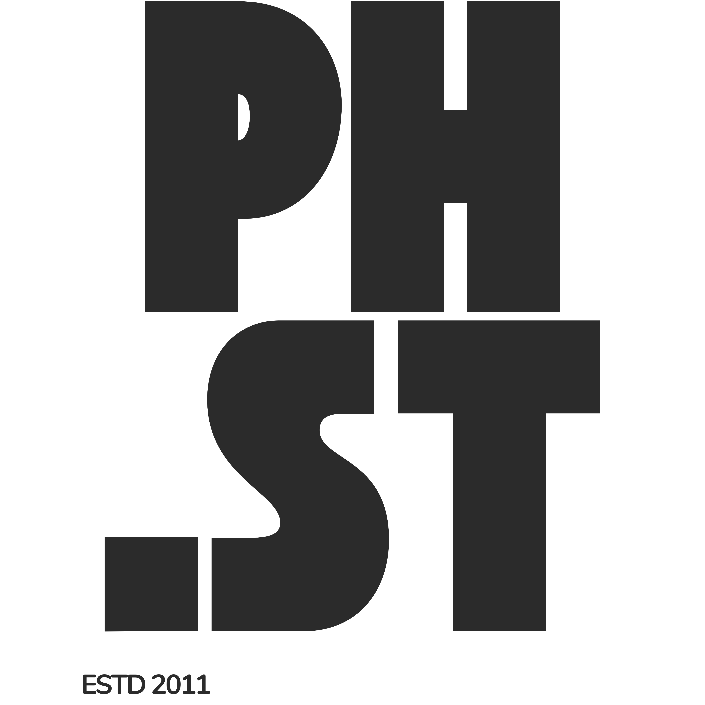

Två professioner, en drivkraft Two professions, one driving force
Lösningsarkitekt och entreprenör. Musiker och producent. Samma sak driver båda — viljan att bygga sammanhang och något meningsfullt. Solution architect and entrepreneur. Musician and producer. The same thing drives both — the will to create context and something meaningful.
Profession
IT-arkitektur &
teknikkonsulting IT Architecture &
Technology Consulting
teknikkonsulting IT Architecture &
Technology Consulting
Lösningsarkitektur, integration och digital transformation — med engagemang för social impact och humanitärt arbete.
Solution architecture, integration and digital transformation — with commitment to social impact and humanitarian work.
Utforska
Explore
Passion
Musik &
produktion Music &
Production
produktion Music &
Production
Kompositör, producent och instrumentalist. Från studio till scen.
Composer, producer and instrumentalist. From studio to stage.
Lyssna
Listen
Innovation
SessionStudio™
SessionStudio™

Kreativa grupper lägger för mycket tid på att organisera sig. SessionStudio ger mer tid att fokusera på det viktiga.
Creative groups spend too much time organizing. SessionStudio gives you more time to focus on what matters.
Upptäck
Discover